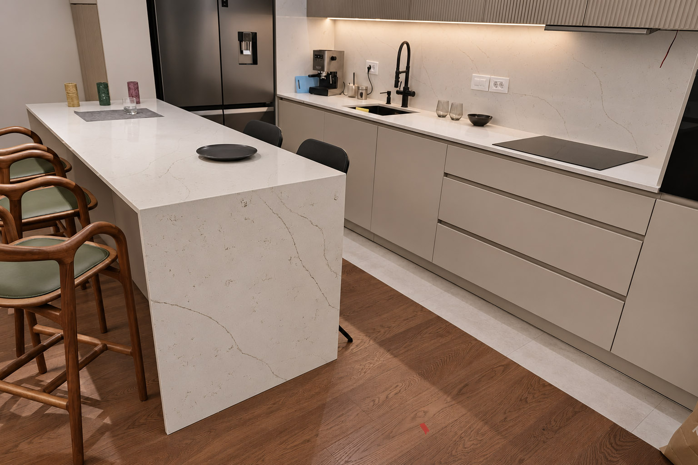
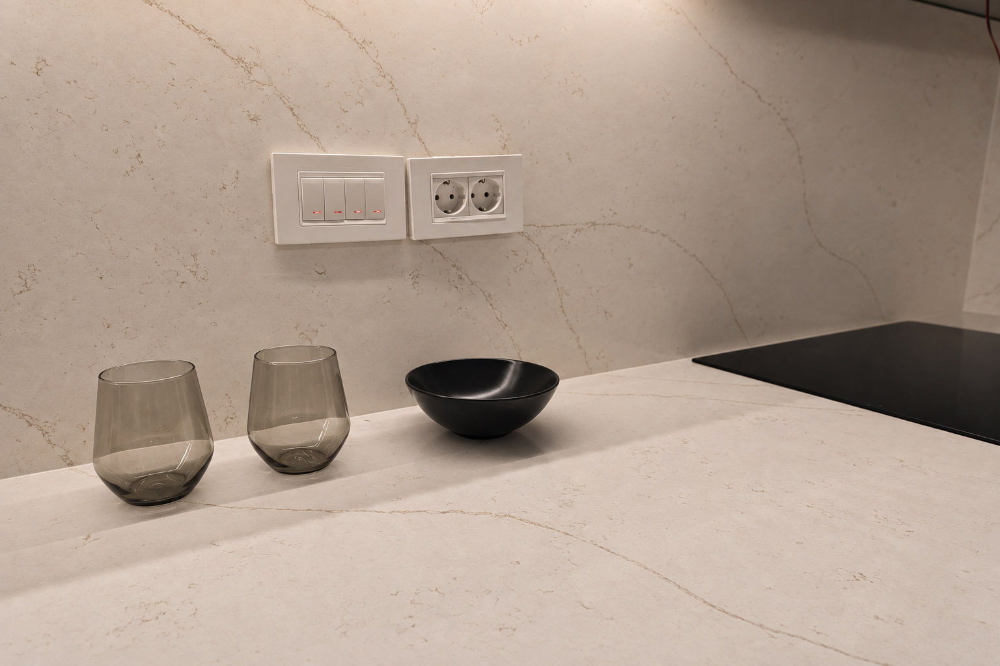
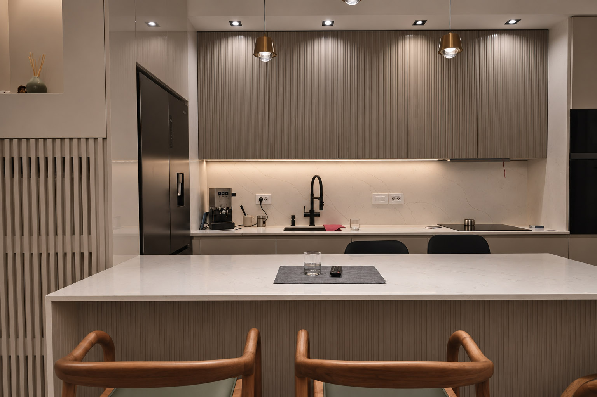
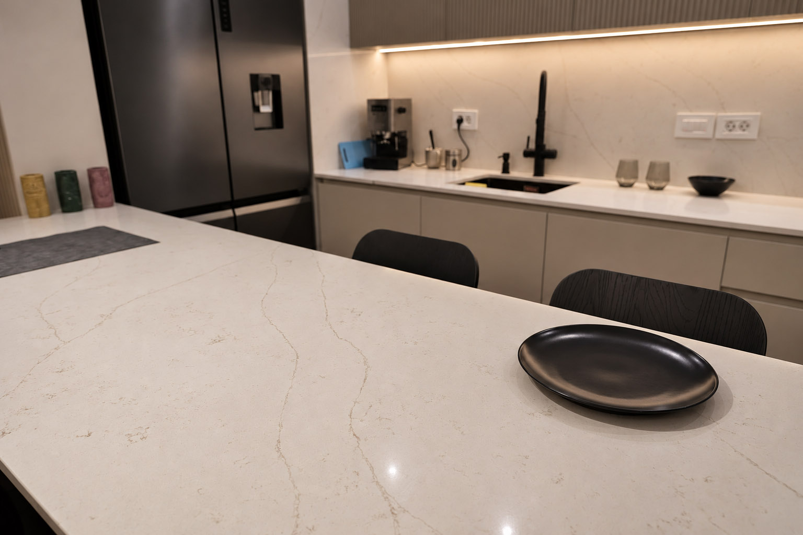

01
Sonata на берегу реки: кухня с островом в Белграде на воде
Молочная поверхность кварцевой плиты Sonata проходит через эту кухню без перерыва: со столешницы она поднимается на стену, а на острове опускается до пола, так что тонкие прожилки продолжают свой путь через каждую кромку. Стыки почти незаметны, а вырезы под мойку и варочную панель выполнены с точностью до миллиметра. В тёплом вечернем свете камень сохраняет спокойную светлую ноту, и утренний кофе, приготовление еды и долгие разговоры за островом становятся моментами, в которых хочется задержаться.
Кварцевая плита Sonata в коллекции


